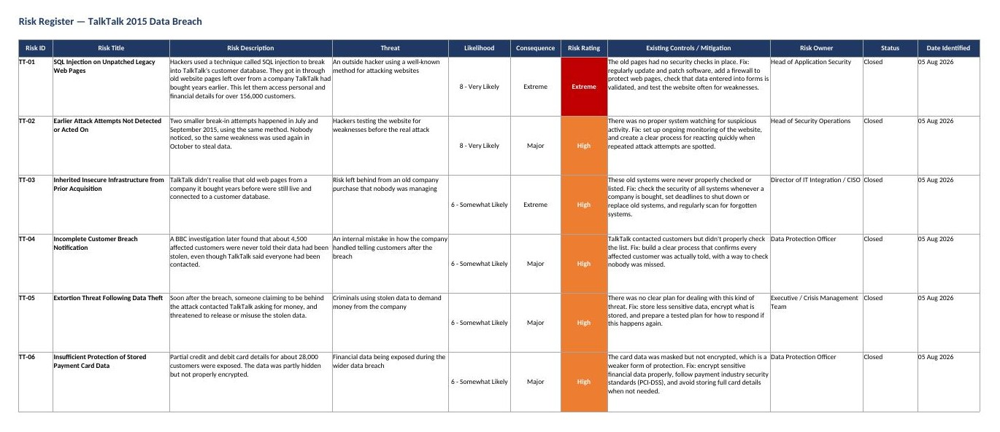
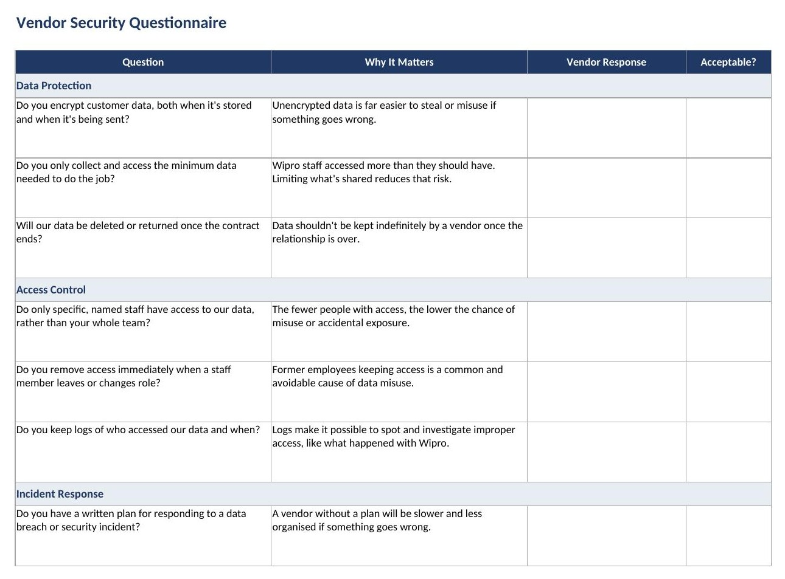
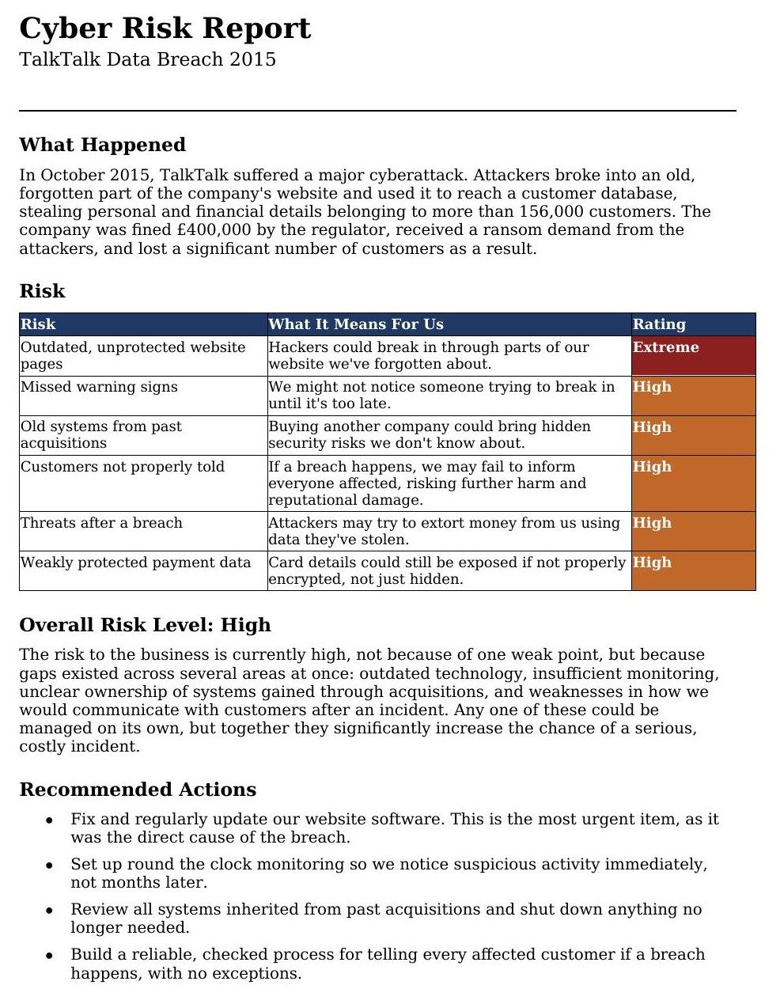

Hi, I'm
Business Information Systems student
I'm a Business Information Systems student with a growing focus on cybersecurity governance, risk and compliance. My background is in systems analysis and business processes, and I've built on that with independent, self directed security work to prepare for a graduate role in the field.
I'm open to graduate opportunities in Governance, Risk and Compliance.
Rather than working through generic exercises, I chose real, well documented incidents, built from ICO investigation findings, BBC News, The Guardian, and Wikipedia. The Risk Register and Board Cyber Risk Report are both based on the TalkTalk 2015 data breach. The Vendor Security Questionnaire is based on a separate, earlier incident, TalkTalk's 2014 third-party (Wipro) data access incident. Together the three let me practise the full range of what a GRC analyst actually does, not just one narrow skill.

What I was trying to achieve
Build a professional standard risk register that identifies and rates the security risks behind a real, well documented data breach, to show I can apply structured risk assessment to an actual incident rather than a theoretical example.
What I used
Microsoft Excel, and public sources (ICO investigation findings, BBC News, The Guardian, Wikipedia) for research.
How I created it
What were the results
A complete 6 risk register covering technical, governance, and third party failures, each with a clear rating and a practical fix.
What I found and what I learnt
Most serious breaches aren't caused by one single mistake, they're usually a chain of smaller gaps that combine to make the impact much worse. This project taught me how to turn a real news story into a structured, professional risk document.
Skills

What I was trying to achieve
Create a practical vendor security questionnaire that a company could actually send to a supplier, based on a real incident where a third party vendor's staff misused their access to customer data.
What I used
Microsoft Excel, and research into TalkTalk's 2014 third-party (Wipro) incident using The Register and BBC News.
How I created it
What were the results
An 11 question vendor questionnaire directly grounded in a real vendor risk incident, not just generic best practice.
What I found and what I learnt
I learnt the difference between a risk caused by an external hacker and one caused by weak oversight of a trusted third party, and how important access limits and audit logs are, since that's exactly what was missing at Wipro.
Skills

What I was trying to achieve
Take the same technical findings from my risk register and translate them into a short, plain language report suitable for a non technical board audience.
What I used
Microsoft Word.
How I created it
What were the results
A one page report communicating the same findings as the risk register, written for a completely different audience.
What I found and what I learnt
Communicating security risk well isn't about simplifying the facts, it's about changing the language without losing the meaning. This is a skill I hadn't practised before and one of the most useful for a GRC role.
Skills
Both of the below are job simulations completed through Forage.
Stepped into the role of an IAM developer at Tata Consultancy Services (TCS), tasked with assessing IAM readiness, designing tailored solutions, and planning IAM implementation for a global technology conglomerate. Across four tasks I covered IAM fundamentals, assessed an enterprise's readiness for IAM, designed custom IAM solutions, and built a full platform integration plan.
Completed two scenario based tasks focused on Governance, Risk & Compliance and threat analysis. In the first, I acted as a cybersecurity consultant investigating a breach, assessing the exploited weaknesses and the business, legal, and reputational impact. In the second, I carried out a cybersecurity risk assessment, identifying key assets, the threats against them, and their likelihood, then prioritised the risks in a written report.
Feel free to reach out about any of the projects on this site, or any roles you think could be a good fit.